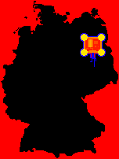
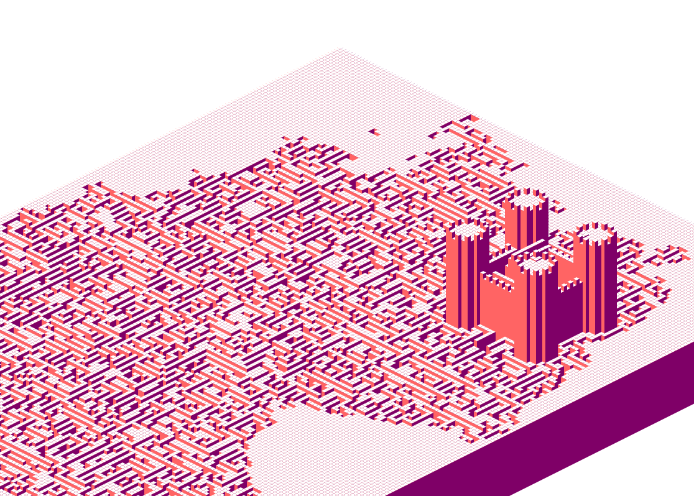
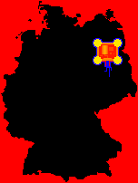
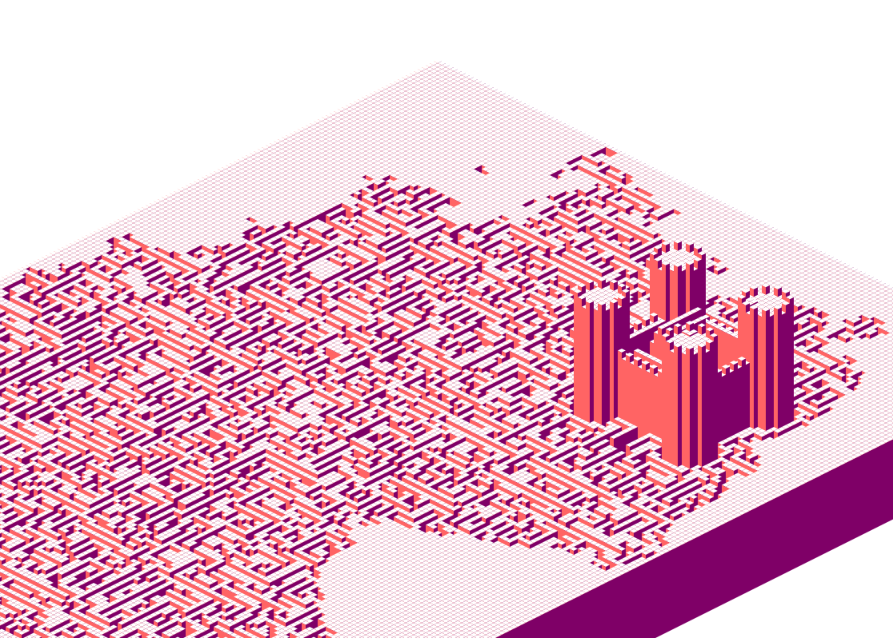

Image Maps
Working with Pixel Data in p5
The p5 library provides functions for loading, displaying, manipulating, and exporting images. Visit the p5 reference to see a list of these functions and example code.
Understanding the .pixels Data
When you call myImage.loadPixels(), p5 will store the image data into an array myImage.pixels[]. You can then read and manipulate the values in the array to modify the image data. Call myImage.updatePixels() when you are finished, and p5 will update the image based on the values you have set.
To use .pixels[] effectively, you need to know how the data is stored in the array. The p5 reference describes how the data is laid out.
- The data is stored in an array.
- A single pixel is stored in 4 values representing the red, green, blue, and alpha components of a pixel.
- Pixels are stored starting from the upperleft corner, moving left to right and then top to bottom.
A 3x3 Example
[0, 0, 0, 255, 255, 0, 0, 255, 0, 0, 0, 255,
255, 0, 0, 255, 255, 255, 255, 255, 255, 0, 0, 255,
0, 0, 0, 255, 255, 0, 0, 255, 0, 0, 0, 255]
Addressing a Pixel
Say we wanted to change the color of the center pixel in the image above. That pixel is in the second row and the second column. If we start counting rows and columns at 0, then the pixel is at x = 1, y = 1;
We can find the index in the array for that pixel by:
x = 1;
y = 1;
width = 3;
components_per_pixel = 4; //r, g, b, a
pixelIndex = (y * width + x) * components_per_pixel;
// 16
pixels[pixelIndex] // 16 red
pixels[pixelIndex + 1] // 17 green
pixels[pixelIndex + 2] // 18 blue
pixels[pixelIndex + 3] // 19 alpha
Image as Data
We usually interpret the data in an image as representing the intensity of gray or intesity of red, green, and blue in each pixel of the image. We can use images to store different data instead. In 3D rendering, images are often used to hold information like shininess, luminance, and bumpiness. You can use an image whenever you want to vary a parameter spacially.
Study Examples
Creating an Image from Scratch

Filtering an Image

Using an Image as Input

Perlin Noise
look up maps/ heat maps
Reference Images

 



- Greg Schomburg - Sketching 2014 Site
- Deepart.io Link to the Procedure Island paper
Sergio Albiac